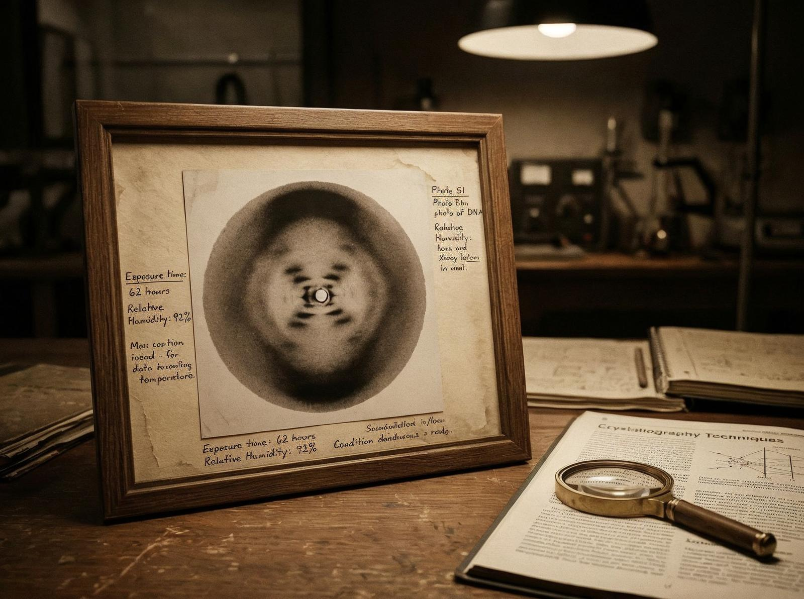

În 1952, o chimistă britanică a creat o fotografie care urma să schimbe lumea. Se numea Rosalind Franklin, iar fotografia se numea Fotografia 51. Arăta structura ADN-ului — ceva ce nimeni nu mai văzuse.
Tensiunea centrală a vieții ei a fost lupta pentru recunoaștere. A fost o femeie într-o lume a bărbaților, o chimistă într-o lume a fizicienilor, o expertă într-o lume a amatorilor.
A lucrat la King's College din Londra, unde a creat Fotografia 51. Era o imagine clară, precisă, care arăta că ADN-ul era o spirală dublă. Dar colegii ei nu au înțeles. Au considerat că e doar o femeie, că nu știe ce face.
Punctul de cotitură pe care istoria îl notează: doi bărbați, James Watson și Francis Crick, au văzut Fotografia 51 fără permisiunea ei. Au înțeles ce arăta, au creat modelul spiralei duble, au publicat un articol în Nature.
Niciun cuvânt despre Rosalind. Niciun cuvânt despre Fotografia 51. Niciun cuvânt despre femeia care a descoperit structura ADN-ului.
În 1962, Watson și Crick au primit Nobelul pentru descoperirea structurii ADN-ului. Rosalind murise deja, în 1958, de cancer ovarian, la doar 37 de ani. Nu putea primi Nobelul — se acordă doar celor vii.

Povestea ei ne-a lăsat ceva: geniul, curajul, nedreptatea. O femeie care a descoperit ceva fundamental, dar care a fost lăsată în umbră. O femeie care a demonstrat că talentul nu are gen, dar că recunoașterea are.
Rosalind Franklin nu a fost doar o chimistă, a fost o femeie care a demonstrat că sexismul există, că femeile sunt lăsate în umbră, că meritul e luat de alții. A demonstrat că știința nu e corectă, dar că geniul nu dispare doar pentru că nu e recunoscut.